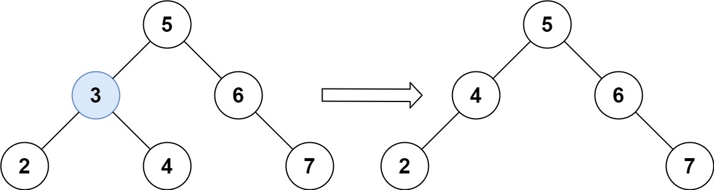
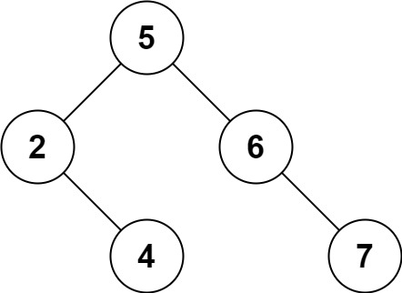

450. 删除二叉搜索树中的节点
递归删：小往左、大往右；找到后右子树空就拿左子树顶上，否则用右子树最小结点（后继）顶替值，再递归删掉那个后继。
思路
- 用返回值接住子树：
root.left/right = deleteNode(child, key)，删成null就自然断链。 - 找到目标：右子树空直接
return root.left（左空时就是null，一并处理）；否则一路向左找右子树最小结点。 - 把后继的值抄到当前结点，再递归从右子树删掉这个值——「借值顶替」比搬指针好写且不易错。
- 值互不相同，所以递归删后继时一定会精确命中那个结点。
图解
最优解
1class Solution {2 public TreeNode deleteNode(TreeNode root, int key) {3 if (root == null) return null;4 // key 小于当前值去左子树删，大于去右子树删，BST 的性质不变5 if (key < root.val) root.left = deleteNode(root.left, key);6 else if (key > root.val) root.right = deleteNode(root.right, key);7 else {8 // 找到了：右子树为空，直接拿左子树顶上来（左也空就顶个 null）9 if (root.right == null) return root.left;10 // 右子树不空：它的最小结点（一路向左）是中序后继，拿来顶替要删的值11 TreeNode succ = root.right;12 while (succ.left != null) succ = succ.left;13 root.val = succ.val;14 // 这个值是从右子树「借」的，再递归把右子树里的它删掉15 root.right = deleteNode(root.right, succ.val);16 }17 return root;18 }19}题目
给定一个二叉搜索树的根节点 root 和一个值 key，删除二叉搜索树中的 key 对应的节点，并保证二叉搜索树的性质不变。返回二叉搜索树（有可能被更新）的根节点的引用。
一般来说，删除节点可分为两个步骤：
- 首先找到需要删除的节点；
- 如果找到了，删除它。
示例 1:

输入：root = [5,3,6,2,4,null,7], key = 3 输出：[5,4,6,2,null,null,7] 解释：给定需要删除的节点值是 3，所以我们首先找到 3 这个节点，然后删除它。 一个正确的答案是 [5,4,6,2,null,null,7], 如下图所示。 另一个正确答案是 [5,2,6,null,4,null,7]。
示例 2:
输入: root = [5,3,6,2,4,null,7], key = 0 输出: [5,3,6,2,4,null,7] 解释: 二叉树不包含值为 0 的节点
示例 3:
输入: root = [], key = 0 输出: []
提示:
- 节点数的范围
[0, 104]. -105 <= Node.val <= 105- 节点值唯一
root是合法的二叉搜索树-105 <= key <= 105
进阶： 要求算法时间复杂度为 O(h)，h 为树的高度。
题面取自力扣当前版本。
数据快照 2026-11-04。题面版权归力扣所有，本站点仅供本人学习使用，请勿对外发布。